A language model never sees your text. A tokenizer first cuts the text into small pieces called tokens (words, parts of words, characters or bytes) and swaps each piece for an integer ID. Inside the model, each ID picks a row from a big table of embeddings: lists of numbers that capture meaning. The chapter runs real code (Phi-3, DeBERTa, sentence-transformers, GloVe) and tours eight real tokenizers, from BERT (2018) to GPT-4 and StarCoder2, to show how the method, the settings and the training data change the tokens. It then moves from token embeddings to contextual token embeddings and to one-vector-per-sentence text embeddings. It ends with word2vec (sliding windows, skip-gram, negative sampling) and uses the very same algorithm to build a song recommender from radio playlists.
The chapter is one chain: a model needs numbers → so we need pieces (tokens) → the way we cut changes everything → then each piece needs a vector → better vectors come from context → sometimes we need one vector for a whole text → and the same "vector for a thing" idea works far outside language. Read the rows top to bottom; the orange box in each row is what the next row reacts to.
Tokens and embeddings are two of the central ideas behind using large language models (LLMs). Chapter 1 showed they matter for the history of Language AI. This chapter says more: you cannot clearly understand how LLMs work, how they are built, or where they are heading without a good feel for these two ideas.
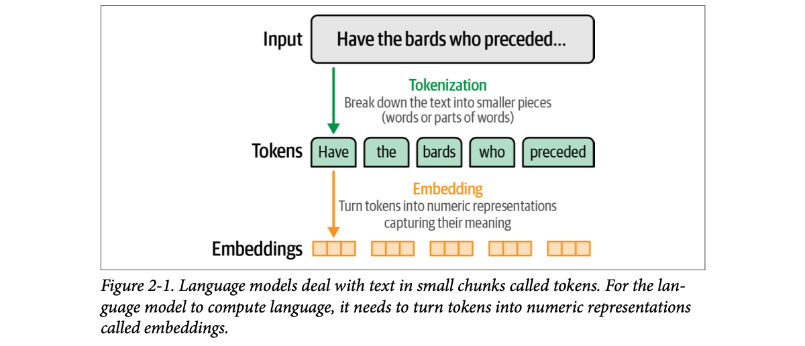
How to read this figure: top to bottom is the order things happen. The green arrow is tokenization: "Have the bards who preceded…" is cut into the tokens Have the bards who preceded. The orange arrow is embedding: each token becomes a short row of boxes, a vector of numbers. Real vectors have hundreds or thousands of numbers; three boxes is just a drawing.
The plan of the chapter, in the book's order:
A railway reservation clerk does not process "Mumbai to Delhi on Rajdhani next Friday" as a sentence. She breaks it into fields (source, destination, train, date) and each field becomes a code: BCT, NDLS, 12951, a date. The computer behind the counter only ever sees codes. Tokens are the fields; token IDs are the codes; embeddings are like a rich profile behind each code (how busy the route is, which trains are similar).
Where it breaks: station codes are fixed by humans. A tokenizer learns its pieces from data, and an embedding's numbers are learned too, not written by anyone.
Neural networks are piles of multiplications and additions. They can only take numbers in. So every system that "reads" text needs two conversions: text → discrete symbols (tokens with IDs, a lookup a computer can do exactly) and symbols → continuous vectors (embeddings, where "similar meaning" can become "nearby numbers" and the network can do maths on it).
"What's the difference between a token and an embedding?" A token is a discrete piece of text with an integer ID from the tokenizer's vocabulary; an embedding is the learned vector of numbers the model uses for it. Tokenization is a fixed lookup done before the model; embeddings are model weights learned in training. Everything downstream (attention, RAG retrieval, semantic caching) works on embeddings.
At the time the book was written, most people meet language models through a web playground: a chat window between the user and a model. If you watch closely, the model does not produce its answer all at once. It generates one token at a time, which is why the text appears to "type itself".
Tokens are not only the model's output. They are also how the model sees its input. A text prompt sent to the model is first broken into tokens.
The reply is the one the book's Phi-3 run produced (plate 04). The split shown is modelled to look like Phi-3 pieces; the book only decodes the first three output tokens (Sub, ject, :).
A chai-stall owner writing your bill on a slate: he writes one item, looks at what he has written, then decides the next one. He never writes the whole bill in one stroke. An LLM writes the same way: each new token is decided after looking at everything written so far.
Where it breaks: the chaiwala knows the full order in advance. The model does not "know" the end of its answer; it only picks the next most fitting token, again and again.
Each step, the model reads all tokens so far and outputs scores for every token in its vocabulary; one token is chosen and appended, and the loop repeats. The streaming you see in a chat app is simply each step's token being sent as soon as it is chosen. Chapter 3 opens this loop up.
"Why does ChatGPT stream its answer?" Because generation is autoregressive: the model produces one token per forward pass, each one conditioned on the previous ones. Streaming just forwards each token as it is produced, which cuts the time to first visible output. In a realtime voice agent this matters a lot: you can start text-to-speech on the first sentence while later tokens are still being generated.
From the outside, a generative LLM looks simple: an input prompt goes in, a response comes out.
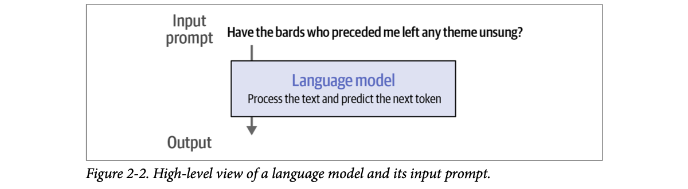
How to read this figure: this is the "black box" view. The prompt (a line of poetry-like text) goes in at the top, the model's job is written inside the box ("process the text and predict the next token"), and the output comes out at the bottom. Notice the job is next token, not "whole answer".
But before the prompt reaches the model, it first goes through a tokenizer that breaks it into pieces. OpenAI's Platform has a page that shows the GPT-4 tokenizer at work; feed it text and each token is shown in a different colour.
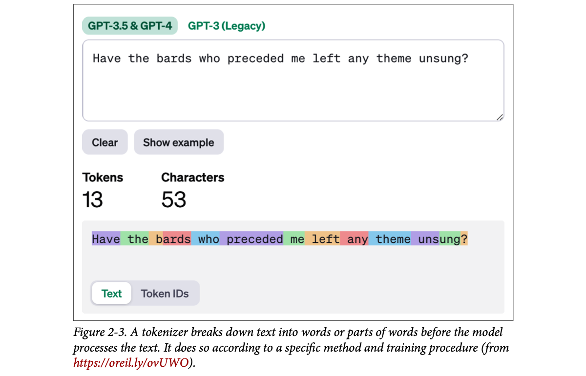
How to read this figure: the page reports 13 tokens for 53 characters. Each coloured block is one token. Common words (Have, the, who) are one token each, and the space in front belongs to the token. Rarer words split: "bards" is b + ards, and "unsung?" is uns + ung + ?. The "Text / Token IDs" switch at the bottom flips to the integer IDs behind the colours.
53 characters ÷ 13 tokens ≈ 4.1 characters per token for this English sentence with GPT-4's tokenizer. Count the words: 10 words → 13 tokens, about 1.3 tokens per word. API pricing and context limits are counted in tokens, so this ratio is how you turn "my document is 30,000 characters" into "about 7,000–8,000 tokens" (rough estimate, English only; code and other languages differ a lot, as plates 09–15 show).
A kirana shopkeeper billing a list: "2 Parle-G, 1 Amul butter, 1 unusual brand of pickle". Known items are one barcode each. The unusual pickle has no barcode, so he writes it as brand + type + size, three entries. The tokenizer does the same: frequent words get one token, rare words get split into known pieces.
Where it breaks: the shopkeeper splits by meaning. A tokenizer splits by frequency in its training data, so the pieces (like ards) often have no meaning on their own.
The tokenizer is a separate program with its own fixed vocabulary, built before the model was trained (plate 06). It runs on the CPU, is deterministic (same text, same tokens every time), and is the only part of the system that ever sees raw text.
"How would you estimate the token count of a request before sending it?" Run the provider's own tokenizer locally (for OpenAI models, the same tokenizer the platform page uses) on the full prompt, including system prompt, history and retrieved context. Rules of thumb like "about 4 characters per English token" are fine for capacity planning but fail on code, numbers and non-English text, so a gateway that enforces budgets should count exactly.
To touch tokens ourselves, the book loads an LLM and its tokenizer exactly as in Chapter 1, using Hugging Face's transformers library. The model is Phi-3-mini-4k-instruct from Microsoft (a small instruction-tuned model with a 4K-token context).
from transformers import AutoModelForCausalLM, AutoTokenizer
# Load model and tokenizer
model = AutoModelForCausalLM.from_pretrained(
"microsoft/Phi-3-mini-4k-instruct",
device_map="cuda",
torch_dtype="auto",
trust_remote_code=True,
)
tokenizer = AutoTokenizer.from_pretrained("microsoft/Phi-3-mini-4k-instruct")AutoModelForCausalLM: loads a causal (left-to-right, next-token) language model, the generative kind.AutoTokenizer: loads the tokenizer that was trained with that model. Same model name for both, because a model only works with its own tokenizer (plate 18).device_map="cuda" puts the model on the GPU; torch_dtype="auto" uses the precision the model was saved in; trust_remote_code=True allows the model's own code from the hub to run.Then the actual generation. First declare the prompt, then tokenize it, then pass the tokens to the model. The model is asked for only 20 new tokens:
prompt = "Write an email apologizing to Sarah for the tragic gardening mishap.
Explain how it happened.<|assistant|>"
# Tokenize the input prompt
input_ids = tokenizer(prompt, return_tensors="pt").input_ids.to("cuda")
# Generate the text
generation_output = model.generate(
input_ids=input_ids,
max_new_tokens=20
)
# Print the output
print(tokenizer.decode(generation_output[0]))<|assistant|> at the end of the prompt is a Phi-3 chat special token meaning "now the assistant speaks" (plate 15).return_tensors="pt" returns a PyTorch tensor; .input_ids takes just the IDs; .to("cuda") moves them to the GPU where the model lives.max_new_tokens=20 stops after 20 generated tokens, which is why the email stops mid-sentence.tokenizer.decode(...) turns the IDs (prompt + new ones) back into text.Output (in the book the 20 generated tokens are in bold; here they are after <|assistant|>):
<s> Write an email apologizing to Sarah for the tragic gardening mishap.
Explain how it happened.<|assistant|> Subject: My Sincere Apologies for the
Gardening Mishap
DearThe key point: the model never receives the text prompt. The tokenizer processed the prompt and returned what the model needs in the variable input_ids, and that is what the model used as input.
UPI: you type "Pay ₹50 to Ramesh". Your bank's servers never see that sentence; they see a VPA (ramesh@okaxis), an amount field and a transaction ID. The app is the "tokenizer" that turns your words into fields the backend understands, and turns the response ID back into "Payment successful".
Where it breaks: UPI fields are structured by design. Tokens are just pieces of text; the model has to learn what they mean.
generate() runs the next-token loop from plate 02 twenty times: each pass takes all IDs so far, predicts one more ID, appends it. Only at the end do we decode IDs back into text. Inside the loop everything stays as integers and vectors.
"What exactly does an LLM receive as input?" A list (tensor) of integer token IDs produced by its tokenizer, usually with special tokens such as a beginning-of-text marker and chat-role markers added by the chat template. The model maps those IDs to vectors internally. If you send a hosted API raw text, the provider runs this tokenizer for you, which is why you are billed per token, not per character.
input_ids: what the tokens look likePrinting input_ids shows what LLMs actually respond to: a series of integers.
tensor([[ 1, 14350, 385, 4876, 27746, 5281, 304, 19235, 363, 278, 25305, 293,
16423, 292, 286, 728, 481, 29889, 12027, 7420, 920, 372, 9559, 29889, 32001]],
device='cuda:0')Each integer is the unique ID of one token (a character, a word, or part of a word). The IDs point into a table inside the tokenizer that lists every token it knows.
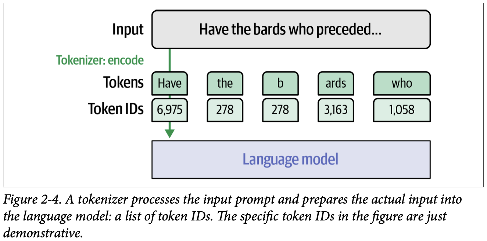
How to read this figure: the green arrow is the encode step. Two rows come out: the tokens (Have the b ards who) and the ID of each one. Only the ID row enters the language model box. The caption warns that these IDs are made up for the drawing (that is why the and b both show 278); real IDs depend on the tokenizer.
To read the IDs, use the tokenizer's decode method one ID at a time:
for id in input_ids[0]:
print(tokenizer.decode(id))Tokens and IDs are exactly as the book prints them (pdf p62–64). Tokens shown with a leading "+" are glued to the token before them (no space in the original text), the ones the book says carry the hidden "connected" character; which tokens those are is read off the original prompt.
What this shows about how the tokenizer broke down the prompt:
<s>), a special token that marks the beginning of the text.Write, an, email).apolog, izing, trag, ic).Notice there is no token for the space character. Instead, partial tokens like "izing" and "ic" carry a special hidden character at their start that says "I am connected to the token before me". Tokens without that character are assumed to have a space before them. (Beyond the book: in Llama/SentencePiece-style vocabularies the visible marker is usually written the other way round, as "▁" on word-starting tokens. The book describes the idea, not the exact symbol; either way, spaces are folded into tokens instead of being tokens.)
Printing generation_output shows the input IDs followed by the new IDs:
tensor([[ 1, 14350, 385, 4876, 27746, 5281, 304, 19235, 363, 278,
25305, 293, 16423, 292, 286, 728, 481, 29889, 12027, 7420,
920, 372, 9559, 29889, 32001, 3323, 622, 29901, 1619, 317,
3742, 406, 6225, 11763, 363, 278, 19906, 292, 341, 728,
481, 13, 13, 29928, 799]], device='cuda:0')The model generated token 3323 (Sub), then 622 (ject); together they form "Subject". Then 29901, the colon :, and so on. Just like on the input side, we need the tokenizer on the output side to turn IDs into text. decode takes one ID or a list:
print(tokenizer.decode(3323)) # Sub
print(tokenizer.decode(622)) # ject
print(tokenizer.decode([3323, 622])) # Subject
print(tokenizer.decode(29901)) # :Look at the two tensors side by side. ID 29889 appears twice in the prompt: both full stops. ID 363 (for) and 278 (the) appear in the prompt and again in the generated part ("Apologies for the Gardening"). 292 (ing) closes both "garden-ing" in the prompt and "Garden-ing" in the reply, and 728 481 (ish ap) appear in both "m-ish-ap" and "M-ish-ap". The same piece always gets the same ID, which is the whole point of a fixed vocabulary. (These matches are inferred by comparing the two tensors with the decoded prompt; the book itself only decodes 3323, 622 and 29901.) 20 new IDs were added (25 → 45), matching max_new_tokens=20.
A cricket scorer's shorthand: "W" for wicket, "4", "6", "•" for a dot ball. The scorecard is just symbols, and anyone with the same legend can turn it back into the story of the innings. Token IDs are the symbols; the tokenizer's table is the legend; decode is reading the scorecard aloud.
Where it breaks: cricket has a dozen symbols. Phi-3's legend has 32,000 entries, most of them fragments like ish.
decode is a reverse table lookup plus a little clean-up (re-inserting spaces from the hidden markers, joining byte pieces). Because many tokens are fragments, decoding a single ID can give odd text (ject); only a full list decodes into readable words. This is why streaming UIs sometimes briefly show half-words.
"Why can't you just stream each token ID's text to the client?" Mostly you can, but some tokens are fragments and some characters (emoji, Chinese) span several byte tokens, so decoding one ID alone can give broken characters. Production servers decode incrementally and hold back incomplete pieces until they form valid text. Worth mentioning if you have built a streaming LLM gateway or voice pipeline.
Three major factors decide how a tokenizer cuts up a prompt:
Tokenizers work in both directions. Besides turning the input text into IDs, they turn the model's output token ID back into the word or token it stands for.
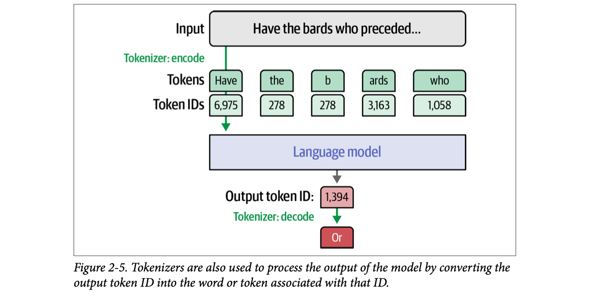
How to read this figure: the top half repeats Figure 2-4 (encode). The new part is at the bottom: the model emits one output token ID (1,394 in the drawing, again demonstrative), and a second green arrow, Tokenizer: decode, turns it into the text Or. So the tokenizer sits on both sides of the model, like a translator at the door going in and coming out.
The chapter names BPE but does not walk through it; interviewers often ask. BPE starts with single characters (or bytes) and repeatedly merges the most frequent adjacent pair into a new token, until the vocabulary reaches the chosen size. Below, a tiny modelled corpus: each word with how often it appears.
Modelled toy corpus, not from the book. Real tokenizers do tens of thousands of merges over gigabytes of text, usually on bytes, and add rules (for example, never merge across a space).
Three tailors make a kurta from the same pattern book. One works in Lucknow for chikankari clients, one in Surat for wedding wear, one in Chennai for office wear. Same method, same measurements, but each one's stock of ready-cut pieces reflects what their customers order most. A tokenizer's vocabulary is the stock of ready-cut pieces; the training data is the customers.
Where it breaks: a tailor can cut a new piece on demand. A tokenizer's vocabulary is frozen after training; anything new must be built from existing pieces.
BPE and WordPiece are both "frequency compressors": they spend vocabulary slots on the strings that save the most tokens on their training data. That is why the data matters so much: whatever is frequent there (English words, Python keywords, runs of spaces) gets its own cheap token, and whatever is rare gets split.
"What decides how text gets tokenized?" Three things: the algorithm (BPE, WordPiece, SentencePiece/unigram), the settings (vocab size, special tokens, casing), and the corpus the tokenizer was trained on. Two models can both be "BPE" and still tokenize the same string very differently, so token counts are not portable between providers. When you switch models in an LLM gateway, re-check your token budgets.
The scheme seen so far is subword tokenization. It is the most common, but there are four notable ways to tokenize:
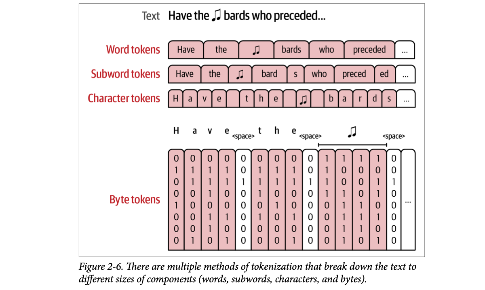
How to read this figure: one sentence, four rows, each row cutting finer. Word tokens: one box per word, the ♫ is one box. Subword tokens: "bards" becomes bard + s, "preceded" becomes preced + ed. Character tokens: one box per letter. Byte tokens: each character becomes a column of 8 bits (0s and 1s). Plain letters and the space are one byte each, but the ♫ symbol needs a run of several byte columns (the bracket above them), because non-English symbols take more than one byte in Unicode's UTF-8 encoding. The rows get longer as pieces get smaller.
apolog plus suffix tokens (-y, -ize, -etic, -ist) shared with many other words, giving a more expressive vocabulary.
Subword tokensFull words and partial words. Besides the expressive vocabulary, they can represent new words by breaking them into smaller pieces, which tend to be in the vocabulary.
Character tokensAlso handle new words, since raw letters are always there to fall back on. That makes tokenizing easy but modelling harder: where a subword model sees "play" as one token, a character model must learn to spell "p-l-a-y" on top of modelling the rest of the sequence. Subwords also fit more text in the limited context length: with a context length of 1,024, you may fit about three times as much text with subwords as with characters (subword tokens often average about three characters each).
Byte tokensBreak text into the individual bytes that encode Unicode characters. Papers such as "CANINE: Pre-training an efficient tokenization-free encoder for language representation" describe this, also called "tokenization-free encoding". "ByT5: Towards a token-free future with pre-trained byte-to-byte models" shows it can be competitive, especially for multilingual text.
One distinction: some subword tokenizers also include bytes in their vocabulary as the last fallback for characters they cannot otherwise represent. The GPT-2 and RoBERTa tokenizers do this. That does not make them tokenization-free byte-level tokenizers, because they only use bytes for a subset of text, not everything (plate 10 shows this with an emoji). For a deeper dive, the book points to Designing Large Language Model Applications.
Word split (on spaces and punctuation), character split and UTF-8 bytes are real, computed in your browser (bytes via TextEncoder). The subword row is modelled: a greedy longest-match over a small hand-made vocabulary, to show the idea, not any real model's tokenizer. "Fits in context" = how many characters of text this style could fit, using this text's characters-per-token.
Context 1,024 tokens. Character tokens: 1 character per token → about 1,024 characters (roughly 170 English words). Subword tokens at about 3 characters per token → about 3,072 characters, roughly three times as much text. (GPT-4 got about 4.1 characters per token on the plate 03 sentence; the book's "about three" is a general average.)
Packing a tiffin for a long train journey with a fixed number of compartments. Whole dishes per compartment (word tokens) is efficient until someone asks for a dish you never packed. One grain per compartment (characters) can rebuild anything but fills the tiffin with almost nothing. Ready-made portions that combine (subwords: rice, dal, a bit of pickle) cover new requests and still carry a full meal.
Where it breaks: food portions are chosen by taste; subword pieces are chosen by how often they appear in the training text.
It is a trade-off between vocabulary size and sequence length. Big pieces = short sequences (cheap attention, more text per context) but a huge, brittle vocabulary. Tiny pieces = small vocabulary that never fails but long sequences, and the model must spend capacity learning spelling. Subwords sit in the middle, and the byte fallback guarantees nothing is ever "unknown".
"Why do LLMs use subword tokenization?" Word-level vocabularies explode and cannot handle unseen words; character-level sequences get long, which costs compute and context, and the model must learn spelling. Subwords give a fixed vocabulary of about 30K–100K+ pieces that can spell any word, keep sequences around 3–4 characters per token in English, and with byte fallback never produce an unknown token.
Recall the three factors that decide which tokens a tokenizer has: the method, the parameters and special tokens used to initialise it, and the dataset it was trained on. To see how these choices change behaviour, the book runs a set of real, trained tokenizers on the same text. Two lessons come out: newer tokenizers changed their behaviour to improve model performance, and specialised models (code generation, for example) often need specialised tokenizers.
text = """
English and CAPITALIZATION
🎵鸟
show_tokens False None elif == >= else: two tabs:" " Three tabs: " "
12.0*50=600
"""The tab characters inside the quotes are invisible in print; the book's own bullets later talk about "two tabs" and "four spaces", so the exact whitespace in the original notebook is not fully recoverable from the PDF.
The text is built to test each kind of tricky input:
elif, None) and the whitespace often used for indentation (in Python, for example).12.0*50=600).The tour goes from older to newer tokenizers. Each token is printed with a coloured background by this helper:
colors_list = [
'102;194;165', '252;141;98', '141;160;203',
'231;138;195', '166;216;84', '255;217;47'
]
def show_tokens(sentence, tokenizer_name):
tokenizer = AutoTokenizer.from_pretrained(tokenizer_name)
token_ids = tokenizer(sentence).input_ids
for idx, t in enumerate(token_ids):
print(
f'\x1b[0;30;48;2;{colors_list[idx % len(colors_list)]}m' +
tokenizer.decode(t) +
'\x1b[0m',
end=' '
)colors_list: six RGB colours; token number idx uses colour idx % 6, so neighbours always differ. The chips on this page use the same six colours.AutoTokenizer.from_pretrained(tokenizer_name): downloads just the tokenizer (no model needed to tokenize).tokenizer(sentence).input_ids: encode; then each ID is decoded on its own, so you see exactly where every token boundary falls.\x1b[0;30;48;2;R;G;Bm ... \x1b[0m: terminal ANSI escape codes for black text on an RGB background, then reset.A driving test track: the same cones, the same reverse-parking bay, the same slope start, for every candidate. Running one tricky text through every tokenizer is a test track for tokenizers; each obstacle (caps, emoji, tabs, numbers) shows a different weakness.
Where it breaks: a driver can fail and retake the test. A tokenizer's quirks are frozen into its model forever.
Decoding each ID separately is a debugging trick: tokenizer.decode(full_list) would hide the boundaries and give you back the original string. One side effect: byte-level pieces of an emoji cannot be decoded alone, so they print as the replacement character "�" (plate 10).
"How would you check how a model will tokenize your users' inputs?" Load just its tokenizer (no GPU needed), run a representative sample of real inputs, count tokens and decode them one by one to see boundaries. Check the hard cases: code indentation, numbers, non-English names, emoji. This is cheap and catches cost and quality surprises before you pick a model.
[UNK] unk_token: an unknown token the tokenizer has no specific encoding for.[SEP] sep_token: a separator for tasks that give the model two texts (the model is then called a cross-encoder). One example is reranking (Chapter 8).[PAD] pad_token: padding for unused input positions, because the model expects a certain input length (its context size).[CLS] cls_token: a special classification token for classification tasks (Chapter 4).[MASK] mask_token: hides tokens during the training process.
BERT was released in two main flavours: cased (capitals kept) and uncased (all capitals turned to lowercase first). With the uncased (and more popular) version:
capital ##ization. The ## marks a partial token joined to the one before it. It is also how spaces are encoded: tokens without ## are assumed to have a space before them.[UNK], "unknown token".Same special tokens as the uncased version. It differs mainly by including uppercase tokens:
CA ##PI ##TA ##L ##I ##Z ##AT ##ION.[CLS] and a closing [SEP]. These are utility tokens: [CLS] (classification) is used at times for sentence classification, and [SEP] (separator) separates sentences in applications that pass two sentences to the model. In Chapter 8, a [SEP] separates the query from a candidate result.The word CAPITALIZATION costs 2 tokens uncased (after lowercasing, capital is a common piece) but 8 tokens cased (all-caps fragments are rare in the training data, so it falls back to tiny pieces). Cased keeps information (a name like "Apple" vs "apple") but pays in tokens for unusual casing.
An old government form that only accepts CAPITAL LETTERS and has no box for Hindi. Anything in another script gets "illegible". BERT-uncased is that form in reverse: everything lowercased, and 🎵 or 鸟 just becomes "[UNK]", unknown.
Where it breaks: a clerk can ask you what you meant. The model never learns anything about the text it marked as [UNK]; it is simply lost.
WordPiece keeps a fixed list of word-start pieces and ## continuation pieces. If a character is not in the list at all (no byte fallback), the whole word becomes [UNK]. BERT was built for understanding tasks (classification, search), where whole-sentence markers like [CLS] and [SEP] are useful and generating newlines is not needed.
"What are [CLS] and [SEP] for?" [CLS] is prepended to every input; its final vector is often used as a summary of the whole sequence for classification. [SEP] separates two segments, e.g. query and passage in a cross-encoder reranker, which reads both together and scores relevance. In a RAG stack that is exactly the reranking stage after vector search.
<|endoftext|>
CAP ITAL IZ ATION).tokenizer.decode([8582, 236, 113]) prints 🎵.Whitespace is important for models that understand or generate code. A model that uses one token for four consecutive spaces is more tuned to a Python code dataset. A model can live with four separate tokens, but it makes modelling harder: the model must keep track of the indentation level, which often leads to worse performance. This is an example of tokenization choices helping a model with a particular task.
Computed live with the browser's UTF-8 encoder (real). 🎵 is 4 bytes; GPT-2 covers it with 3 tokens (book: 8582, 236, 113), presumably because its byte-level BPE merged some of the byte pairs (our reading, not the book's).
A courier company that has no pin-code entry for a tiny village. Instead of refusing the parcel (BERT's [UNK]), it writes the full latitude and longitude digit by digit. The parcel still arrives; it just takes more label space. GPT-2's byte fallback is that: anything can be written, rare things just cost more tokens.
Where it breaks: the courier understands coordinates. The model sees three meaningless byte tokens and must learn from data that together they mean "music note".
GPT-2's BPE runs on bytes, not Unicode characters, so its 256 base symbols cover every possible input. Frequent byte sequences got merged into word pieces during training; rare ones (like most emoji) stay as two or three byte-ish pieces. Individually these pieces are not valid characters, so decoding one alone prints "�".
"Why do non-English languages cost more tokens?" Byte-level BPE vocabularies are trained mostly on English, so English words become single tokens while other scripts often fall back to multi-byte pieces: a Hindi or Chinese sentence can take several times the tokens of its English translation. That means higher cost, higher latency, and less room in the context window for those users.
<unk> (unk_token) · <pad> (pad_token)
<unk>, making the model completely blind to them.A stenographer in court who only writes words and ignores line breaks and pauses. Perfect for a transcript of speech; useless if you hand her a Python file where every indent matters.
Where it breaks: the stenographer could be told to note indents. A tokenizer without whitespace tokens cannot represent them at all.
SentencePiece treats text as a raw stream (it does not assume words are separated by spaces, useful for languages like Japanese), and the unigram model picks a vocabulary by starting large and pruning pieces that matter least. Flan-T5's version was trained on mostly natural-language text and normalises whitespace, so indentation and newlines vanish.
"Name tokenization algorithms." BPE (merge frequent pairs; GPT family, Llama), WordPiece (similar merges but chosen by likelihood; BERT), and the unigram language model (prune a big vocabulary; often used via the SentencePiece library, as in T5). SentencePiece is a library/implementation that supports BPE and unigram, not a separate algorithm.
<|endoftext|> and three fill-in-the-middle (FIM) tokens: <|fim_prefix|>, <|fim_middle|>, <|fim_suffix|>. They let the LLM generate a completion that considers not only the text before it but also the text after it (paper: "Efficient training of language models to fill in the middle"; details beyond the book's scope).
GPT-4's tokenizer behaves much like its ancestor GPT-2. The differences:
elif has its own token. This and the previous point come from the model's focus on code as well as natural language.Layout of a FIM prompt as commonly described (prefix, suffix, then "middle" where the model writes). The book only names the tokens; this ordering is beyond the book and shown for intuition.
Filling a crossword clue when you already have letters on both sides. Knowing the end ("return result") changes what you write in the middle. FIM tokens tell the model "here's the start, here's the end, now fill the gap", which is what code editors need when your cursor is in the middle of a file.
Where it breaks: in a crossword the gap length is fixed. The model decides how long the middle is.
A bigger vocabulary (100K vs 50K) gives room to spend slots on code patterns (indentation runs, keywords) and longer English words. More text per token means shorter sequences: cheaper and more content in the same context window. The cost is a bigger embedding table (plate 18).
"Why did vocabularies grow from 30–50K to 100K+?" Larger vocabularies compress text better (fewer tokens per word, whitespace runs as one token, more languages covered), which lowers cost per request and fits more in context. The trade-off is a larger embedding and output layer and rarer tokens that get less training signal.
StarCoder2 is a 15-billion-parameter model focused on generating code, described in "StarCoder 2 and the stack v2: The next generation", continuing the original StarCoder ("StarCoder: May the source be with you!").
<|endoftext|>; fill-in-the-middle: <fim_prefix> <fim_middle> <fim_suffix> <fim_pad>; repository context: <filename> <reponame> <gh_stars>
Why repository tokens? When representing code, managing context is important. One file may call a function defined in another file. The model needs a way to tell code in different files of the same repository apart from code in different repositories, so StarCoder2 has special tokens for the repository name and the filename (and GitHub stars).
6 0 0. The hypothesis is that this gives a better representation of numbers and mathematics. In GPT-2, for example, 870 is one token but 871 is two (8 and 71). You can see how that might confuse the model about how numbers work.Digit-split is the real StarCoder2 rule. The "irregular" row is modelled: a toy vocabulary that, like GPT-2 in the book's example, happens to contain some numbers (870) but not their neighbours (871 → 8 + 71). Try 870, 871, 1999, 2024.
Teaching a child arithmetic with a calculator where some buttons are whole numbers ("870") and others are single digits. To add 870 + 1 the child has to know that the "870" button and the "8","71" buttons are neighbours. With only digit buttons (0–9), every number is built the same way, and place value is visible.
Where it breaks: digit splitting makes numbers longer (more tokens), and the book calls the benefit a hypothesis, not a proven law.
BPE merges whatever is frequent, so common numbers (years, round numbers) become single tokens while their neighbours do not. The model then sees an arbitrary mix of number chunks, and digit-level patterns like carrying in addition become hard to learn. Splitting every digit makes the representation regular.
"Why are LLMs bad at arithmetic or counting letters?" One big reason is tokenization: numbers and words are chopped into irregular chunks, so the model never directly sees digits or letters. Code and math-focused tokenizers split digits individually to help. In production, the safe answer is a calculator or code tool via function calling rather than trusting the model's arithmetic.
Galactica ("Galactica: A large language model for science") focuses on scientific knowledge and was trained on many scientific papers, reference materials and knowledge bases. It pays extra attention to tokenization so it is sensitive to the nuances of its dataset; for example it includes special tokens for citations, reasoning, mathematics, amino acid sequences and DNA sequences.
<s> <pad> </s> <unk>;[START_REF] … [END_REF]. Example from the paper: Recurrent neural networks, long short-term memory [START_REF]Long Short-Term Memory, Hochreiter[END_REF];<work>, a token the model uses for chain-of-thought reasoning.
6 0 0).'\t\t'.>= into > = and "tabs" into t abs.)A law clerk's notebook with special stamps: one for "case citation starts", one for "case citation ends", one for "my working". Galactica's special tokens are those stamps, so the model can learn exactly where a citation begins and ends.
Where it breaks: stamps only help if the training data was marked up with them consistently.
Special tokens turn structure in the data into explicit, single symbols. The model does not have to guess from punctuation where a reference ends; a dedicated token marks it. Domain-specific tokens (DNA, amino acids) also stop long biological strings being chopped into English-like fragments.
"When would you add special tokens?" When your data has structure the model must respect: conversation roles, citation boundaries, tool calls, document separators, reasoning sections. Adding a token means adding a new embedding row that must be trained (fine-tuning), so it is a model change, not just a prompt change.
The Phi-3 model used throughout the book reuses the tokenizer of Llama 2 and adds a number of special tokens.
<|endoftext|>; chat tokens: <|user|> <|assistant|> <|system|>. As chat LLMs became popular in 2023, conversation became a leading use case, and tokenizers added tokens that mark the turns of a conversation and the role of each speaker.
Notable: <s> at the start, "CAPITALIZATION" in six pieces (C AP IT AL IZ ATION), "tokens" as to kens, newlines kept, and digits split one per token like StarCoder2.
Tokens transcribed from the book's printouts (pdf p70–77). Whitespace-only tokens are invisible in print and are not drawn; "↵" marks where the printout shows a kept newline. Counts are of the drawn chips, so they are a rough guide, not the exact tokenizer count.
| Tokenizer | Year | Method | Vocab | Newlines | 🎵鸟 | CAPITALIZATION | 600 |
|---|---|---|---|---|---|---|---|
| BERT uncased | 2018 | WordPiece | 30,522 | lost | [UNK] | capital ##ization (2, lowercased) | 600 |
| BERT cased | 2018 | WordPiece | 28,996 | lost | [UNK] | 8 pieces | 600 |
| GPT-2 | 2019 | BPE | 50,257 | kept | byte tokens | 4 pieces | 600 |
| Flan-T5 | 2022 | SentencePiece | 32,100 | lost | <unk> | 5 pieces | 600 |
| GPT-4 | 2023 | BPE | ~100K | kept | byte tokens | 2 pieces | 600 |
| StarCoder2 | 2024 | BPE | 49,152 | kept | byte tokens | 2 pieces | 6 0 0 |
| Galactica | 2022† | BPE | 50,000 | kept | byte tokens | 3 pieces | 6 0 0 |
| Phi-3 / Llama 2 | 2023/24† | BPE | 32,000 | kept | byte tokens | 6 pieces | 6 0 0 |
† The book gives no year heading for Galactica and Phi-3; the years shown are beyond the book (Galactica 2022; Llama 2 2023, Phi-3 2024). Piece counts are read from the printouts.
The same Hindi film released with eight different subtitle teams. Some drop the song lyrics ([UNK]), some ignore line breaks, some write numbers in words, some keep every pause. The film (your text) is the same; what reaches the audience (the model) differs.
Where it breaks: viewers can switch subtitle tracks. A model is trained with one tokenizer and is stuck with it.
Chat tokens are how a "chat" model knows who is talking. Your API's list of messages (system, user, assistant) is rendered into one token sequence with these role markers in between (a chat template). The model was fine-tuned on that exact layout, so it learns to answer after <|assistant|> and stop with an end token.
"How does a chat API turn messages into model input?" A chat template serialises each message with role special tokens, e.g. <|system|>…<|user|>…<|assistant|>, and the model generates until it emits an end-of-turn token. Using the wrong template for a model (common when self-hosting) quietly degrades answers, so it is one of the first things to check when a self-hosted model "acts dumb".
The tour showed many ways real tokenizers differ. What decides their behaviour? Three major groups of design choices: the tokenization method, the initialization parameters, and the domain of the data the tokenizer targets.
There are several, with BPE the more popular. Each is an algorithm for choosing a good set of tokens to represent a dataset. Hugging Face has a page summarising all of them.
<s>), end-of-text, padding, unknown, CLS, masking. Designers also add domain tokens, like Galactica's <work> and [START_REF].
CapitalizationIn languages like English, how to handle capitals? Lowercase everything? Name capitalization often carries useful information, but do we want to spend vocabulary space on all-caps versions of words?
Even with the same method and parameters, a tokenizer behaves differently depending on the dataset it was trained on (and this happens before model training even starts). The methods optimise the vocabulary for a specific dataset; the tour showed the effect on code and multilingual text.
For code, a text-focused tokenizer may tokenize indentation spaces one by one, while code-focused models often make different choices, for example one token for the whole four-space indent, which makes the model's job easier and so makes better performance more likely. Toggle the book's example:
Same snippet as the book (pdf p78). Token boundaries are modelled to illustrate the book's point (each space a token vs one indent token, add + _numbers); the book highlights only some tokens in colour.
For more, the book points to the Tokenizers section of the Hugging Face course and to Natural Language Processing with Transformers, Revised Edition.
Designing a keyboard for a language. Method = layout philosophy (QWERTY vs InScript). Parameters = how many keys and which special keys (₹, Ctrl). Domain = who types on it: a programmer's keyboard wants {}, [], Tab within easy reach; a Hindi typist wants matras. Same factory, three very different keyboards.
Where it breaks: people can learn a new keyboard. A trained model cannot swap tokenizers without retraining (plate 18).
Each vocabulary slot is a budget item. Spending a slot on " " (four spaces) or elif pays off only if those strings are frequent in the data you care about. Bigger vocab, more special tokens and case-sensitivity all cost slots and embedding rows; the "right" settings depend on the target domain.
"You're building a model for a niche domain (legal Hindi, medical codes). Would you train a new tokenizer?" If the domain text tokenizes badly (many tokens per word, lots of byte fallback), a domain tokenizer can cut sequence length and improve quality, but then the model must be (re)trained with it, since embeddings are tied to the vocabulary. A cheaper middle ground is adding a few special or domain tokens and fine-tuning their new embeddings.
With tokenization understood, one part of representing language to a model is solved: language is now a sequence of tokens. Train a good-enough model on a large-enough set of tokens and it starts to capture the complex patterns in its training data:
The next piece is finding the best numerical representation for these tokens, so the model can calculate and model the patterns in text. Those patterns show up to us as the model's coherence in a language, its ability to code, or any of the growing list of capabilities we expect. As Chapter 1 showed, that representation is what embeddings are: the numeric space used to capture the meanings and patterns in language.
Reaching good language coherence and better-than-average factual generation creates a new problem: some users start to trust the model's facts. At the start of 2023 some language models were being called "Google killers". Advanced users soon saw that generation models alone are not reliable search engines. This led to the rise of retrieval-augmented generation (RAG), which combines search with LLMs (Chapter 8).
A token ID is like an Aadhaar number: unique, but the number itself says nothing about the person. An embedding is like a detailed profile (city, language, age, interests). Two people with similar profiles are "close" even if their Aadhaar numbers are far apart.
Where it breaks: profile fields have names. Embedding dimensions are learned and usually have no clear human meaning.
IDs are arbitrary labels: ID 278 is not "closer" to ID 279 in meaning. A model needs inputs where distance means something, so each ID is mapped to a vector whose values are learned during training so that the network's predictions improve. Patterns like grammar or facts end up spread across these vectors and the layers that process them.
"Why do we need RAG if the model already knows facts?" Because generation is pattern completion, not lookup: models can state wrong facts fluently, have a training cutoff, and don't know your private data. RAG retrieves relevant documents at query time and puts them in the prompt so the answer is grounded and citable. In a voice agent's memory, that's how you bring user-specific history into each turn.
After a tokenizer is initialised and trained, it is used in the training of its language model. That is why a pretrained language model is linked to its tokenizer and cannot use a different tokenizer without training.
The model holds one embedding vector for each token in the tokenizer's vocabulary. When you download a pretrained model, part of it is this embeddings matrix holding all these vectors. Before training starts, the vectors are randomly initialised like the rest of the model's weights; training gives them the values that produce the useful behaviour.
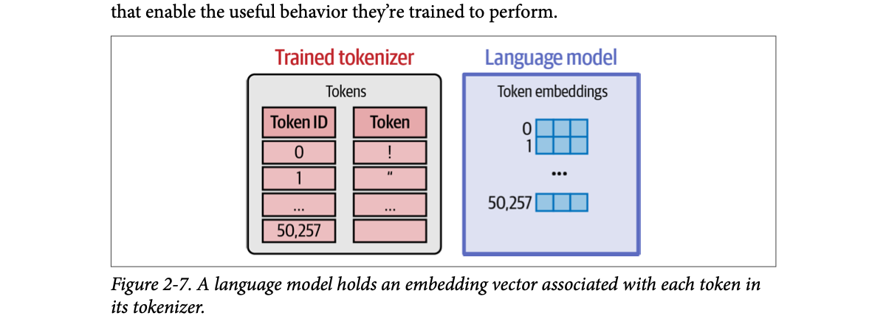
How to read this figure: two tables with matching row numbers. On the left, inside the trained tokenizer: ID 0 is !, ID 1 is ", and so on up to 50,257 (a GPT-2-sized vocabulary). On the right, inside the language model: row 0 is the vector for !, row 1 the vector for ", and so on. The ID is simply the row number. Swap the tokenizer and the rows would point at the wrong vectors, which is why the two travel together.
Vocab sizes are from the book. Embedding dimensions (768, 3,072, 4,096) are beyond the book (from the models' published configs, for scale). The vector values in the table are modelled random numbers, like the random start the book describes.
GPT-2 small: 50,257 tokens × 768 numbers = 38.6 million parameters just for the embedding table; at 2 bytes each that's about 77 MB. Double the vocabulary to ~100K and the table doubles too. This is one concrete cost of a bigger vocabulary from plate 12.
A library's catalogue number and the shelf it points to. The catalogue (tokenizer) says "book 278 = 'the'". The shelf (embedding matrix) holds, at position 278, everything the library knows about it. Move to a different catalogue numbering and every number now points at the wrong shelf.
Where it breaks: shelves hold fixed books. Embedding rows are rewritten during training until they become useful.
The "embedding layer" is just a matrix of shape vocab_size × d. Looking up token ID i means taking row i; mathematically it's the same as multiplying a one-hot vector by the matrix, but done as an index for speed. Gradients during training flow only into the rows of tokens that appeared in the batch, which is why very rare tokens end up with poorly trained vectors.
"Can I use GPT-4's tokenizer with Llama?" No: the model's embedding matrix is indexed by its own tokenizer's IDs; a different tokenizer produces IDs that point to unrelated rows. You can only change a model's tokenizer by retraining (or at least extending the vocabulary and training the new rows).
Token embeddings are the input to a language model. Now: how language models create better token embeddings. This is one of the main ways to use language models for text representation, and it powers applications like named-entity recognition (NER: finding names of people, places, companies in text) and extractive text summarization (summarising a long text by highlighting its most important parts, instead of generating new text).
Instead of one static vector per token or word, language models create contextualized word embeddings: a word gets a different vector depending on its context. Other systems can use these vectors for many tasks. Besides the text applications above, contextualized vectors are what power AI image generation systems like DALL·E, Midjourney and Stable Diffusion.
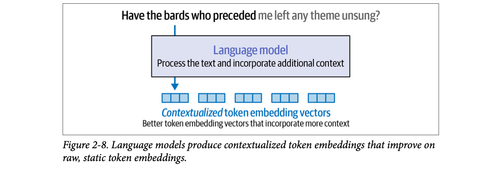
How to read this figure: the first five words are in black (the tokens we focus on), the rest in grey (the context). The language model's job here is "process the text and incorporate additional context", and the output is one blue vector per token: contextualized token embeddings, "better token embedding vectors that incorporate more context".
Code to get them, mostly familiar by now:
from transformers import AutoModel, AutoTokenizer
# Load a tokenizer
tokenizer = AutoTokenizer.from_pretrained("microsoft/deberta-base")
# Load a language model
model = AutoModel.from_pretrained("microsoft/deberta-v3-xsmall")
# Tokenize the sentence
tokens = tokenizer('Hello world', return_tensors='pt')
# Process the tokens
output = model(**tokens)[0]AutoModel (not ForCausalLM): loads the model without a text-generation head, so the output is the vectors themselves.model(**tokens) passes the tokenizer's outputs (IDs and attention mask) as keyword arguments; [0] takes the first output, the last layer's vectors.microsoft/deberta-base and the model from microsoft/deberta-v3-xsmall, exactly as printed here. (They are different checkpoints; normally you'd load both from the same name. Reproduced as the book has it.)Inspect the output's shape (we expect a multi-dimensional array):
output.shape
# torch.Size([1, 4, 384])Skip the first dimension and read it as four tokens, each embedded in a vector of 384 values. The first dimension is the batch dimension, used when (as in training) we send several input sentences to the model at once; they're processed together, which speeds things up.
Why four vectors for two words? Decode the tokens:
for token in tokens['input_ids'][0]:
print(tokenizer.decode(token))
# [CLS]
# Hello
# world
# [SEP]This tokenizer and model add [CLS] and [SEP] at the start and end. The model's output:
tensor([[
[-3.3060, -0.0507, -0.1098, ..., -0.1704, -0.1618, 0.6932],
[ 0.8918, 0.0740, -0.1583, ..., 0.1869, 1.4760, 0.0751],
[ 0.0871, 0.6364, -0.3050, ..., 0.4729, -0.1829, 1.0157],
[-3.1624, -0.1436, -0.0941, ..., -0.0290, -0.1265, 0.7954]
]], grad_fn=<NativeLayerNormBackward0>)This is the raw output of a language model; LLM applications build on top of outputs like this. (grad_fn=<NativeLayerNormBackward0> just says the last operation was a layer normalisation and gradients are being tracked.)
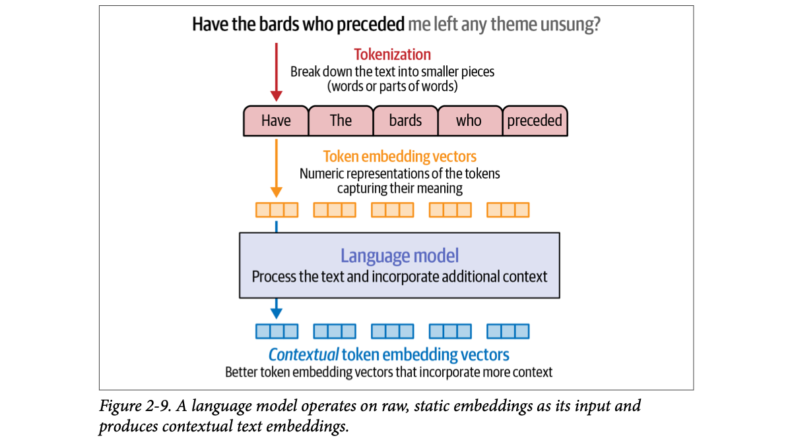
How to read this figure: it joins the whole chapter so far into one column. Red arrow: tokenization into pieces. Orange: token embedding vectors, the static rows looked up from the table (plate 18). Then the language model, and blue: contextual token embedding vectors. Same number of vectors in and out, one per token, but the blue ones carry context. Technically, the switch from token IDs to raw embeddings is the first step inside a language model. The book says this picture is essential for Chapter 3.
Modelled 2-D positions for intuition; not computed by any real model. The static vector (orange) is the same row from the table for every sentence; the contextual vector (blue) moves with the meaning.
The word "bat" in a dictionary has one entry listing every meaning (static). The commentator saying "what a bat!" during an IPL match clearly means the cricket bat; the same word at a Halloween party means the animal. A contextual embedding is the meaning in that sentence, after the model has "listened" to the words around it.
Where it breaks: a dictionary lists a few senses. Contextual vectors are continuous: every sentence gives a slightly different vector, not one of a few discrete senses.
The static rows go through many layers in which each token's vector is updated using information from the other tokens (attention, Chapter 3). After the last layer, each token's vector reflects both the token itself and its context. Encoder models like DeBERTa read in both directions, so even the first token "sees" the last one.
"Static vs contextual embeddings?" Static (word2vec, GloVe, or an LLM's input table) gives each token one fixed vector regardless of sentence. Contextual embeddings come out of a transformer's layers and differ per occurrence, so "bank" in "river bank" and "bank loan" get different vectors. Output shape is [batch, tokens, hidden_dim], e.g. [1, 4, 384] for "Hello world" with DeBERTa-v3-xsmall including [CLS] and [SEP].
Token embeddings are central to how LLMs work, but many applications need to work on whole sentences, paragraphs or documents. This led to special language models that produce text embeddings: a single vector that represents a piece of text longer than one token. A text embedding model takes text and ultimately produces one vector that captures its meaning in some useful form.
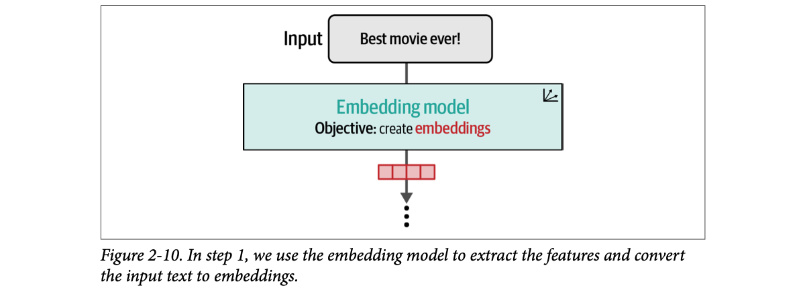
How to read this figure: one input ("Best movie ever!"), one box (an embedding model whose objective is to create embeddings), one red vector out. Not one vector per token: one for the whole text. The dots below say "step 1": something else (a classifier, a search index) will use this vector next. The caption calls this "extracting features".
There are several ways to make a text embedding. One of the most common is to average the values of all the token embeddings the model produces (mean pooling). But high-quality text embedding models tend to be trained specifically for text embedding tasks.
The sentence-transformers package (based on Sentence-BERT, Reimers & Gurevych 2019) is popular for using pretrained embedding models. Like transformers, it can load public models. The book uses all-mpnet-base-v2 (Chapter 4 discusses how to choose an embedding model):
from sentence_transformers import SentenceTransformer
# Load model
model = SentenceTransformer("sentence-transformers/all-mpnet-base-v2")
# Convert text to text embeddings
vector = model.encode("Best movie ever!")
vector.shape
# (768,)model.encode(text) does tokenization, the model pass and the pooling in one call, returning a NumPy array.Part II of the book shows how useful these vectors are, powering everything from categorization to semantic search to RAG.
1 million chunks × 768 dimensions × 4 bytes (float32) = about 3.1 GB of vectors before any index overhead. At 384 dimensions it halves to about 1.5 GB. Dimension is a cost knob, not only a quality knob. (Calculation, not from the book.)
A restaurant reviewer's one-line rating card after a whole meal: not a note per dish, but one summary that captures "great biryani, slow service, worth it". A text embedding is that card for a paragraph, compact enough to compare with thousands of other cards quickly.
Where it breaks: a card is readable. A 768-number vector is only useful for comparing with other vectors from the same model.
Averaging is a cheap way to squash N token vectors into one, but a plain LLM was never trained so that averages of similar sentences land close together. Dedicated embedding models are fine-tuned (with contrastive training, Chapter 10) exactly so that similar texts get nearby vectors, which is why they work better for search.
"How do you get one embedding for a document?" Use a model trained for sentence embeddings (e.g. sentence-transformers models) which typically pools token vectors (mean pooling or the [CLS] vector) and was fine-tuned contrastively. Long documents are chunked first, since the model has a max token length, and each chunk gets its own vector. Always embed queries and documents with the same model.
Embeddings are useful outside text generation too. Giving objects meaningful vector representations helps in many domains, including recommender engines and robotics. This part shows how to use pretrained word2vec embeddings and how the method creates them. Seeing word2vec training prepares you for contrastive training in Chapter 10; the next section uses those embeddings for recommendations.
Download pretrained word embeddings (like word2vec or GloVe) with the Gensim library:
import gensim.downloader as api
# Download embeddings (66MB, glove, trained on wikipedia, vector size: 50)
# Other options include "word2vec-google-news-300"
# More options at https://github.com/RaRe-Technologies/gensim-data
model = api.load("glove-wiki-gigaword-50")
model.most_similar([model['king']], topn=11)glove-wiki-gigaword-50: GloVe vectors trained on Wikipedia, 50 numbers per word, a 66 MB download. word2vec-google-news-300 is another option.model['king'] is the vector for "king"; most_similar([...], topn=11) returns the 11 nearest words by cosine similarity (1.0 = same direction).Values printed on pdf p85. "king" is its own nearest neighbour at 1.0000001 (tiny floating-point error).
Cosine similarity only cares about the angle, not the length: change B's length and the score stays the same.
In a Mumbai local, people who board at the same stations at the same times every day end up "near" each other: office-goers, college students, vendors. You could guess who someone is from who they travel with. Word embeddings learn exactly that: words that keep showing up in the same company (king, prince, queen, throne) end up close.
Where it breaks: "ii" shows up near "king" (as in "George II"), and "son", "uncle", "brother" appear too. Embeddings capture co-occurrence, not dictionary meaning.
Each word's vector was trained so that words appearing in similar contexts get similar vectors. "Nearest neighbours" is then just: compute cosine similarity between the "king" vector and every word vector in the vocabulary (about 400K words for this GloVe set; that figure is beyond the book), sort, take the top 11. Vector databases do the same at scale with approximate indexes.
"What is cosine similarity and why use it for embeddings?" It's the dot product of two vectors divided by their lengths: the cosine of the angle between them, from −1 to 1. It ignores vector length, which often reflects frequency rather than meaning, and focuses on direction. With normalised vectors it equals the dot product, which is why vector DBs often normalise and use inner product.
word2vec comes from the paper "Efficient estimation of word representations in vector space" and is explained in detail in Jay Alammar's The Illustrated Word2vec. The book condenses the central ideas because the next section builds on them for recommendations.
Like LLMs, word2vec is trained on examples generated from text. Take the sentence "Thou shalt not make a machine in the likeness of a human mind" from Frank Herbert's Dune novels. The algorithm uses a sliding window to generate training examples. With a window size of two, we consider two neighbours on each side of a central word.
The embeddings come from a classification task: train a neural network to predict whether two words commonly appear in the same context (here, context means in many sentences of the training dataset). Think of it as a network that takes two words and outputs 1 if they tend to appear together and 0 if they don't.
In the first window position we get four training examples:
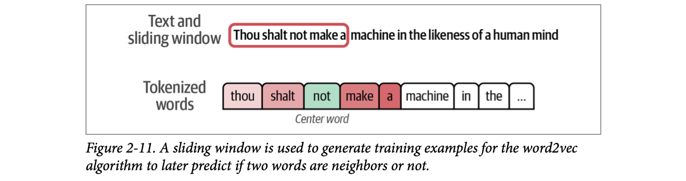
How to read this figure: the red box is the window: five words. The green word in the middle, not, is the center word; the pink words on each side (thou shalt | make a) are its neighbours within distance 2. The white words are outside this window and will be covered as it slides right.
In each example, the center word is one input and each neighbour is a separate second input. The trained model should output 1 when the two words really are neighbours:
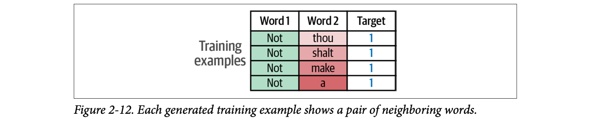
How to read this figure: one row per (center, neighbour) pair: (not, thou), (not, shalt), (not, make), (not, a), all with target 1 = "these are neighbours". One window position → four rows.
If the dataset only has target 1, the model can cheat: always output 1 and score perfectly. So we enrich the dataset with words that are not typically neighbours: negative examples.
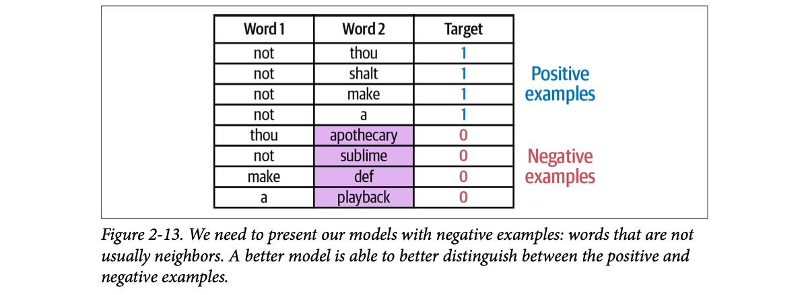
How to read this figure: the top four rows are the positives from Figure 2-12 (target 1, blue). The bottom four pair real words with random words (purple: apothecary, sublime, def, playback), target 0 (red). Now "always say 1" would be wrong half the time, so the model has to actually learn which pairs belong together.
We don't have to be very scientific in choosing negatives. Many useful models come from the simple ability to tell positive examples from randomly generated ones, an idea inspired by noise-contrastive estimation ("Noise-contrastive estimation: A new estimation principle for unnormalized statistical models"). So we pick random words, add them to the dataset, and label them as not neighbours (the model should output 0).
That gives the two main concepts of word2vec: skip-gram, the method of selecting neighbouring words, and negative sampling, adding negative examples by random sampling from the dataset.
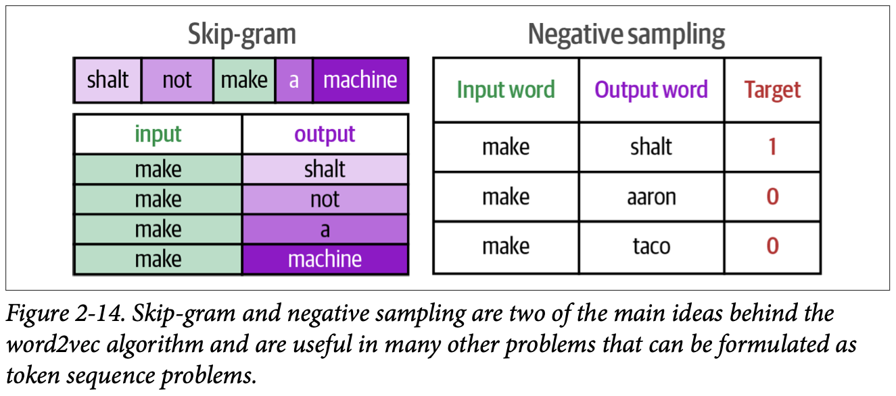
How to read this figure: left half, skip-gram: the window has slid so make is the center; it produces four (input, output) pairs with shalt, not, a, machine. Right half, negative sampling: keep one true pair (make, shalt → 1) and add random pairs (make, aaron → 0; make, taco → 0). The caption's key point: these two ideas work for any problem you can phrase as sequences of tokens, which is how plate 23 gets songs.
Positives are computed exactly as the book describes (center word × each neighbour within the window). Negatives are drawn at random from a small modelled pool of words; press Back/Next to re-draw.
This way we can generate millions or even billions of training examples from running text. Before training a network on them, we make tokenization decisions, just as with LLM tokenizers: how to deal with capitalization and punctuation, and how many tokens to keep in the vocabulary.
Then we create an embedding vector for each token and randomly initialise it. In practice this is a matrix of dimensions vocab_size × embedding_dimensions.
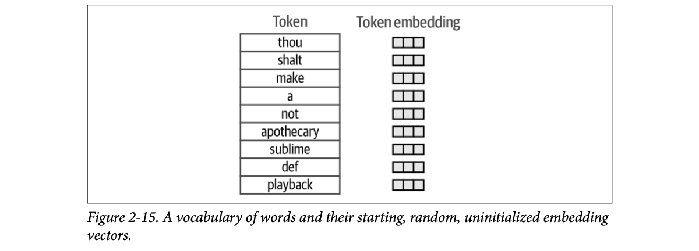
How to read this figure: one row per vocabulary word (including the random negatives like apothecary and playback), each with an empty vector. Empty = random starting values that mean nothing yet. It is the same kind of table as the LLM's embedding matrix in Figure 2-7.
A model is then trained on each example: it takes two embedding vectors and predicts whether they're related.
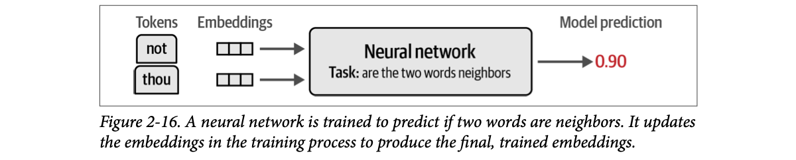
How to read this figure: two tokens (not, thou), their current vectors, a network asking "are the two words neighbours?", and a prediction of 0.90 (close to 1, a confident "yes"; this pair's target is 1, so the error is small). Training nudges both vectors so next time the prediction is even closer to the target.
Based on whether the prediction was right, the usual machine learning training step updates the embeddings so the model is more likely to be correct next time it sees those two vectors. By the end of training, all tokens in the vocabulary have better embeddings.
Modelled: 2-D vectors, prediction = sigmoid(dot product), one gradient step with learning rate 0.5. Shows the direction of the update, not the book's numbers.
This idea, a model that takes two vectors and predicts whether they have a certain relation, is one of the most powerful ideas in machine learning and has repeatedly worked very well with language models. That's why Chapter 10 is dedicated to it and how it optimises language models for specific tasks (like sentence embeddings and retrieval). The same idea is central to bridging modalities like text and images, key to AI image generation (Chapter 9): the model sees an image and a caption and predicts whether the caption describes the image.
A matchmaker's training: she is shown real couples ("yes, they go together") and random pairs drawn from the town register ("no"). After thousands of examples, she has a mental "profile" for each person such that compatible people's profiles line up. She never needed a rule book; she learned from yes/no pairs. word2vec's embeddings are those profiles.
Where it breaks: a random pair might actually be compatible. With word2vec that happens too (a random "negative" may be a real neighbour), and it still works because it is rare.
For a pair, the score is roughly the dot product of their vectors squashed to 0–1. A positive pair with a low score pulls both vectors toward each other; a negative pair with a high score pushes them apart. Repeat over billions of pairs and words that share neighbours get pulled toward the same region. Negative sampling is what makes this cheap: instead of scoring every word in the vocabulary (a huge softmax), you score the true neighbour plus a handful of random ones.
"Explain word2vec in 30 seconds." Slide a window over text; each (center word, neighbour) pair is a positive example. Add random words as negatives. Train a tiny model that scores pairs from their embeddings, positives high and negatives low. The learned embedding table is the output. Skip-gram + negative sampling is an early form of contrastive learning, the same recipe used today to train sentence embedding models for RAG and CLIP-style image-text models.
Embeddings are useful in many domains; in industry they are widely used for recommendation systems. Here the book uses word2vec to embed songs using human-made music playlists. The trick: treat each song like a word (token) and each playlist like a sentence. The resulting embeddings can recommend similar songs that often appear together in playlists.
The dataset was collected by Shuo Chen from Cornell University. It contains playlists from hundreds of radio stations around the US.
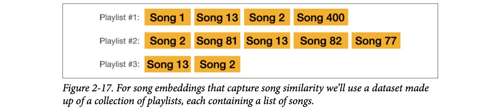
How to read this figure: each row is a playlist, each orange tile a song. Look at Song 13 and Song 2: they appear together in all three playlists, and close to each other. Exactly the "words that share a context" signal word2vec learns from, so their embeddings will end up close.
Modelled: a simple co-occurrence count (how often two songs share a playlist), not word2vec. It shows the signal word2vec learns from. With only three playlists, Song 2 and Song 13 are each other's top match.
The book shows the end product first. Give it Michael Jackson's "Billie Jean" (song ID 3822):
# We will define and explore this function in detail below
print_recommendations(3822)| id | Title | Artist |
|---|---|---|
| 4181 | Kiss | Prince & The Revolution |
| 12749 | Wanna Be Startin' Somethin' | Michael Jackson |
| 1506 | The Way You Make Me Feel | Michael Jackson |
| 3396 | Holiday | Madonna |
| 500 | Don't Stop 'Til You Get Enough | Michael Jackson |
Reasonable: Madonna, Prince and other Michael Jackson songs are the nearest neighbours. Moving from pop to rap, 2Pac's "California Love" (ID 842):
| id | Title | Artist |
|---|---|---|
| 413 | If I Ruled the World (Imagine That) (w/ Lauryn Hill) | Nas |
| 196 | I'll Be Missing You | Puff Daddy & The Family |
| 330 | Hate It or Love It (w/ 50 Cent) | The Game |
| 211 | Hypnotize | The Notorious B.I.G. |
| 5788 | Drop It Like It's Hot (w/ Pharrell) | Snoop Dogg |
Another reasonable list. Now, how to build it.
A wedding DJ in Punjab notices that whenever someone requests one particular bhangra hit, the next requests are usually from the same handful of songs. He never analyses beats or lyrics; he just remembers which songs keep getting played together. That's this recommender: it knows nothing about the music, only which songs share playlists.
Where it breaks: a brand-new song that no playlist contains yet has no embedding at all (the "cold start" problem; beyond the book).
word2vec doesn't care that its tokens are words. Any sequence of IDs where neighbours are related works: songs in playlists, products in a shopping session, pages in a browsing session. The playlist curators' taste is the "language", and the song embeddings learn its grammar.
"How would you build 'customers also bought' with no product metadata?" Treat each user session or basket as a sentence and each item ID as a word, train word2vec (often called item2vec), then recommend nearest neighbours by cosine similarity, usually served from a vector index. It captures co-occurrence behaviour well but needs a fallback (content embeddings, popularity) for new items.
First load the playlists and each song's metadata (title, artist):
import pandas as pd
from urllib import request
# Get the playlist dataset file
data = request.urlopen('https://storage.googleapis.com/maps-premium/dataset/yes_complete/train.txt')
# Parse the playlist dataset file. Skip the first two lines as
# they only contain metadata
lines = data.read().decode("utf-8").split('\n')[2:]
# Remove playlists with only one song
playlists = [s.rstrip().split() for s in lines if len(s.split()) > 1]
# Load song metadata
songs_file = request.urlopen('https://storage.googleapis.com/maps-premium/dataset/yes_complete/song_hash.txt')
songs_file = songs_file.read().decode("utf-8").split('\n')
songs = [s.rstrip().split('\t') for s in songs_file]
songs_df = pd.DataFrame(data=songs, columns = ['id', 'title', 'artist'])
songs_df = songs_df.set_index('id')split('\n')[2:]: one playlist per line; the first two lines are metadata, so skip them.s.split(): a playlist line is space-separated song IDs, so each playlist becomes a list of ID strings (a "sentence" of "word" tokens).if len(s.split()) > 1: drop playlists with only one song; a single song has no neighbours to learn from.songs_df: a table from song ID to title and artist, indexed by ID, so results can be shown as names.Each element of playlists is a list of song IDs:
print( 'Playlist #1:\n ', playlists[0], '\n')
print( 'Playlist #2:\n ', playlists[1])
# Playlist #1: ['0', '1', '2', '3', '4', '5', ..., '43']
# Playlist #2: ['78', '79', '80', '3', '62', ..., '210']Train the model:
from gensim.models import Word2Vec
# Train our Word2Vec model
model = Word2Vec(
playlists, vector_size=32, window=20, negative=50, min_count=1, workers=4
)| Argument | Value | What it means |
|---|---|---|
playlists | list of lists | The "sentences": each playlist is a sequence of song-ID "words". |
vector_size | 32 | Each song gets a 32-number embedding (small, because songs are a simpler "language" than English). |
window | 20 | Neighbours up to 20 songs away on each side count as context: a whole stretch of a playlist, not just the next song. |
negative | 50 | 50 random negative songs per positive pair (negative sampling). |
min_count | 1 | Keep every song, even if it appears only once (no vocabulary pruning). |
workers | 4 | Train with 4 CPU threads. |
Short meanings of each argument are standard Gensim behaviour; the book lists the values but does not explain each one.
Training takes a minute or two and produces an embedding for every song. Then find similar songs exactly as with words:
song_id = 2172
# Ask the model for songs similar to song #2172
model.wv.most_similar(positive=str(song_id))
# [('2976', 0.9977465271949768),
# ('3167', 0.9977430701255798),
# ('3094', 0.9975950717926025),
# ('2640', 0.9966474175453186),
# ('2849', 0.9963167905807495)]
print(songs_df.iloc[2172])
# title Fade To Black
# artist Metallicamodel.wv holds the trained word (here: song) vectors; most_similar(positive=...) ranks others by cosine similarity. IDs are strings because the playlists were split from text.The recommendations are all in the same heavy metal and hard rock genre. The helper used at the start:
import numpy as np
def print_recommendations(song_id):
similar_songs = np.array(
model.wv.most_similar(positive=str(song_id),topn=5)
)[:,0]
return songs_df.iloc[similar_songs]
# Extract recommendations
print_recommendations(2172)topn=5: the five nearest songs. np.array(...)[:,0] keeps the first column (the IDs), dropping the scores.songs_df.iloc[similar_songs] looks up title and artist for those IDs.| id | Title | Artist |
|---|---|---|
| 11473 | Little Guitars | Van Halen |
| 3167 | Unchained | Van Halen |
| 5586 | The Last in Line | Dio |
| 5634 | Mr. Brownstone | Guns N' Roses |
| 3094 | Breaking the Law | Judas Priest |
The book's table shows 11473 and 5586/5634 where its earlier most_similar list had 2976/2640/2849; 3167 and 3094 appear in both. The book doesn't explain the difference (likely separate training runs, since word2vec training is random; that reading is ours, not the book's).
Playlist #1 runs from '0' to '43' (44 songs if the IDs have no gaps). For the song at position 22, a window of 20 makes songs at positions 2–42 its context: 40 positive pairs from one song. With negative=50, each positive pair also brings 50 random songs labelled 0, so that one center song alone produces 40 × 51 = 2,040 training comparisons. (Arithmetic on the book's settings.)
Radio jockeys across hundreds of stations are unknowingly "writing sentences" in a language of songs every day. Training word2vec on their playlists is like learning which songs are "synonyms" in that language, purely from how the RJs sequence them.
Where it breaks: radio playlists reflect station formats and promotions, not only listener taste. The embeddings learn whatever pattern the data has.
The pipeline is plate 22 applied to new tokens: sliding window over each playlist, positive (song, song) pairs, random negatives, a small vocab × 32 embedding table updated by the yes/no task. Similarity scores near 0.997 show the songs sit in a tight cluster in this 32-dimensional space.
"Walk me through deploying an embedding-based recommender." Offline: train item embeddings (word2vec on sessions), store them in a vector index. Online: for a seed item (or the average of a user's recent items), do a nearest-neighbour search, filter (already-seen, unavailable), and re-rank with business rules. Retrain regularly so new items get vectors. Same infrastructure as a RAG retriever: an embedding model, a vector store, k-NN queries.
The book's summary, in plain words:
| Key term | Plain meaning |
|---|---|
| Token | A chunk of text (word, part of word, character or byte) that the model treats as one unit. |
| Tokenizer | The program that splits text into tokens and maps them to IDs (encode), and maps IDs back to text (decode). |
| Token ID | The integer for a token: its row number in the tokenizer's vocabulary table. |
| Vocabulary (vocab size) | The full set of tokens a tokenizer knows; often 30K–50K, increasingly 100K+. |
| Special token | A token with a job other than text: start/end of text, padding, unknown, [CLS], [SEP], [MASK], chat roles, FIM, citations. |
| Subword tokenization | Vocabulary of full and partial words; can spell new words from pieces. |
| BPE (byte pair encoding) | Tokenization method that builds a vocabulary by repeatedly merging frequent pairs; used by GPT models. |
| WordPiece | BERT's tokenization method; continuation pieces are marked with ##. |
| SentencePiece | A tokenizer implementation supporting BPE and the unigram language model; used by Flan-T5. |
| Byte fallback | Using raw bytes as tokens for characters not otherwise in the vocabulary (GPT-2, RoBERTa). |
| Tokenization-free encoding | Using bytes for everything (CANINE, ByT5). |
| Fill in the middle (FIM) | Special tokens letting a model generate text that fits between a given prefix and suffix. |
| Embedding | A vector of numbers representing a token, word, text or item so that similar things are close. |
| Embedding matrix | The vocab_size × dimensions table of token vectors inside a model. |
| Static embedding | One fixed vector per token, whatever the context (word2vec, GloVe, an LLM's input table). |
| Contextualized embedding | A token vector produced by a language model that depends on the surrounding text. |
| Text embedding | One vector for a whole sentence or document. |
| Mean pooling | Averaging token vectors into one text vector. |
| Batch dimension | The first axis of a tensor, indexing several inputs processed at once. |
| word2vec | Classic method that learns word embeddings by predicting whether two words are neighbours. |
| Skip-gram | Making (center word, neighbour) pairs from a sliding window. |
| Negative sampling | Adding random (word, non-neighbour) pairs labelled 0 so the model can't just say "yes". |
| Noise-contrastive estimation | The idea of learning by telling real data apart from random noise; inspired negative sampling. |
| Contrastive training | Training by contrasting related pairs with unrelated pairs (Chapter 10). |
| Cross-encoder | A model that reads two texts together (separated by [SEP]) and scores them, e.g. a reranker. |
| NER | Named-entity recognition: finding names of people, places, organisations in text. |
| Extractive summarization | Summarising by selecting the most important parts of the text, not writing new text. |
AutoTokenizer, AutoModelForCausalLM, AutoModel: load any hub model and its matching tokenizer; encode, generate, decode, get contextual embeddings.all-mpnet-base-v2 gives 768-dim vectors.glove-wiki-gigaword-50) and trains Word2Vec on any token sequences, like playlists.OpenAI's tiktoken library exposes GPT tokenizers for counting tokens offline; vector databases (Qdrant, pgvector, FAISS) store text or item embeddings for k-NN search; LLM gateways count tokens per request for rate limits and billing.
No. The tokenizer turns it into a list of integer token IDs (input_ids), and that is the model's input. The model then maps IDs to embedding vectors internally.
<s>, a special token marking the beginning of the text.
Partial tokens (like "izing", "ic") carry a hidden character saying they attach to the previous token; tokens without it are assumed to have a space before them. BERT does the same job with ##.
The tokenization method (BPE, WordPiece…), the tokenizer parameters (vocab size, special tokens, capitalization), and the dataset the tokenizer is trained on.
They can't handle new words that appear after training, and the vocabulary fills with near-duplicates (apology, apologize, apologetic, apologist). Subwords fix both.
Characters make modelling harder (the model must learn spelling) and use more tokens: with a 1,024-token context, subwords fit about three times as much text, since subword tokens average about three characters.
No. It's a subword (BPE) tokenizer that falls back to bytes only for characters it can't otherwise represent. Tokenization-free models (CANINE, ByT5) use bytes for everything.
They become [UNK] / <unk>: the model is completely blind to them and can never read or produce them.
elif?Because it focuses on code too. One token per indentation run saves tokens and spares the model from counting spaces to track indentation, which tends to improve code performance.
Hypothesis: one token per digit represents numbers and maths better. In GPT-2, 870 is one token but 871 is two (8 and 71), which can confuse the model.
Garbage: the model's embedding matrix is indexed by its own tokenizer's IDs; another tokenizer's IDs point at unrelated rows (and may exceed its 32,000 rows). A pretrained model can't use a different tokenizer without training.
1 = batch (one sentence); 4 = tokens ([CLS], Hello, world, [SEP]); 384 = dimensions of each contextual vector.
Static: one fixed vector per token (the model's input table, word2vec). Contextual: per-token vectors after the model, depending on surrounding text. Text: one vector for the whole sentence/document (e.g. 768 dims from all-mpnet-base-v2).
With only positives (target 1), the model cheats by always saying 1. Negatives are random words paired with the center word, labelled 0; picking them at random works well (inspired by noise-contrastive estimation).
Songs are words, playlists are sentences. Train Gensim Word2Vec(playlists, vector_size=32, window=20, negative=50, min_count=1), then most_similar gives the nearest songs. window=20 counts songs up to 20 positions away as context; negative=50 draws 50 random songs per positive pair. Billie Jean → Prince, Madonna, more Michael Jackson; Fade To Black → Van Halen, Dio, Judas Priest.